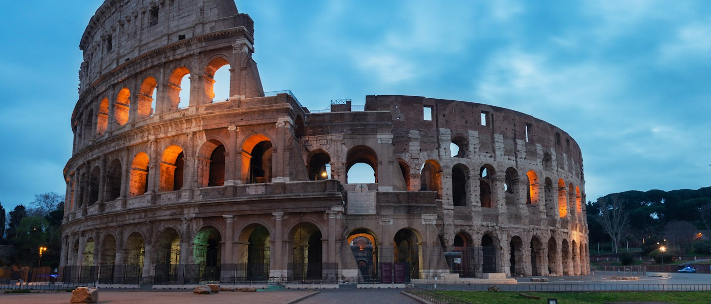
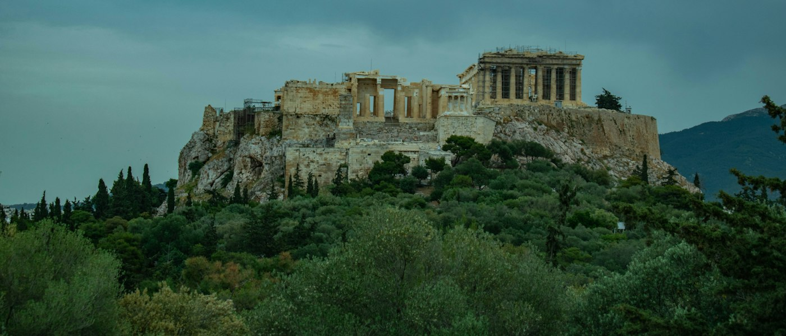
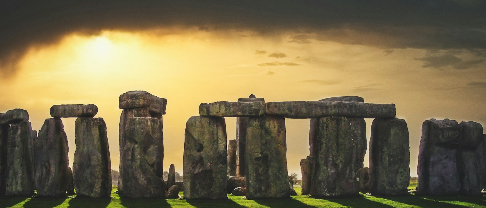

The Colosseum, Rome | Italy
Etched in the heart of Rome, The Colosseum is a massive oval shaped amphitheater that is high on
heritage tours in the world. Also called the Flavian Amphitheatre, this masterpiece of world's
heritage was built between 70 to 72 CE during the rule of Emperor Vespasian. It is the largest
amphitheater in the world that can accommodate up to 50,000 people. The Colosseum was a famous
ground for gladiatorial contests such as animal hunts, battle with bulls etc. It is a site worth
visiting for people who like to discover the rich heritage of different countries.
The Colosseum is an iconic amphitheater that dates back to AD 80 and is considered one of the
greatest engineering feats of the Roman Empire. The historic significance of the Colosseum lies in
its role as the amphitheater where spectacles, such as gladiatorial contests and public events, took
place, showcasing the grandeur and power of the Roman Empire.
...
Parthenon, Acropolis | Greece
The largest and most elaborate Greek temple of the bygone era, Parthenon is a must visit historic
monument in the world to witness the elevated culture of Athens. This erstwhile temple that was
dedicated to Goddess Athena is now a famous historical monument of Greece that is a symbol of its
imposing status during the 5th century when Athens was flourishing in wealth, power and culture.
Despite being ravaged many times, what’s left behind in the iconic monument of Acropolis is still
praise worthy. The architectural brilliance speaks volumes about the love with which it was built
and designed.
Dating back to the 5th century BC, the Acropolis embodies the democratic spirit of Ancient Greece.
Not only an example of fine classical Greek architecture and sculptural craftsmanship, it was once a
thriving centre in Ancient Athens for cultural and civic ceremonies.
...
Stonehenge, Wiltshire | England
One of the most iconic landmarks in England, Stonehenge is an unusual yet intriguing prehistoric stone circle that is surrounded by many mystifying stories. This historic site located on Salisbury Plain in Wiltshire takes us back in time to the Neolithic and Bronze Age. Some believe it to be a symbol of ceremonial and mortuary practices while others say that these are the ruins of a Roman temple, folklore suggests that this prehistoric stone circle was created by the wizard of Arthurian legend - Merlin. Well, the mystery of Stonehenge remains unresolved and you must visit this amazing site to find which side of it is relevant. ...
Hagia Sophia, Turkey – Confluence of Faiths and Empires

The Hagia Sophia Grand Mosque a mosque and a major cultural and historical site in Istanbul, Turkey.
The last of three church buildings to be successively erected on the site by the Eastern Roman
Empire, it was completed in 537 AD. The site was an Eastern Orthodox church from 360 AD to 1204,
when it was converted to a Catholic church following the Fourth Crusade. It was reclaimed in 1261
and remained Eastern Orthodox until the Ottoman conquest of Constantinople in 1453. It served as a
mosque until 1935, when it became a museum. In 2020, the site once again became a mosque.
Resplendent in Istanbul’s heart, the Hagia Sophia is a harmonious blend of Byzantine and Ottoman
architectural genius. Commissioned by Emperor Justinian I in 537 AD, it stood as the world’s largest
cathedral for nearly a millennium, reflecting Byzantine Christianity’s splendor. With its colossal
dome seemingly suspended from heaven, it was a marvel of medieval engineering.
...